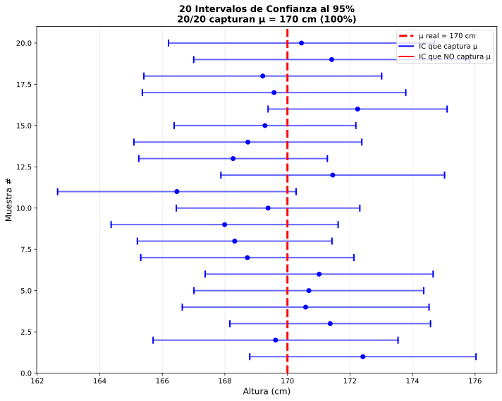
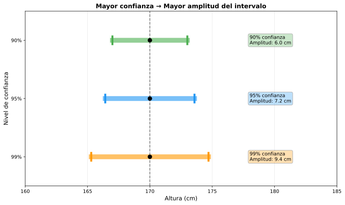

| Situación | Condiciones | Distribución | Fórmula IC |
|---|---|---|---|
| Caso 1 | σ conocida n ≥ 30 |
Normal (Z) | \\(\\bar{x} \\pm z_{\\alpha/2} \\cdot \\frac{\\sigma}{\\sqrt{n}}\\) |
| Caso 2 | σ desconocida n ≥ 30 |
Normal (Z) (aprox.) |
\\(\\bar{x} \\pm z_{\\alpha/2} \\cdot \\frac{s}{\\sqrt{n}}\\) |
| Caso 3 | σ desconocida n < 30 Pob. normal |
t-Student (n-1 gl) |
\\(\\bar{x} \\pm t_{\\alpha/2,n-1} \\cdot \\frac{s}{\\sqrt{n}}\\) |
| gl | t₀.₀₂₅ (95%) | Comparación z₀.₀₂₅ |
|---|---|---|
| 5 | 2.571 | 1.96 |
| 10 | 2.228 | |
| 20 | 2.086 | |
| 30 | 2.042 |


Ej 1: Muestra de 15 notas de Matemáticas: x̄ = 6.8, s = 1.5. Población normal. IC al 95%.
Identificación del caso:
Grados de libertad:
Valor crítico t:
Error estándar:
Margen de error:
IC:
Interpretación: Con 95% de confianza, la nota media poblacional está entre 5.97 y 7.63.
Nota: Si hubiéramos usado erróneamente Z = 1.96:
IC sería [6.04, 7.56] → Más estrecho pero MENOS fiable (error metodológico).
Ej 2 (Contexto Vigo): Tiempo de viaje Vigo-Santiago en Renfe. Muestra de 50 trayectos: x̄ = 52.3 min, s = 4.8 min. IC al 99%.
Identificación:
Datos:
Cálculos:
IC:
Conclusión práctica: Con altísima confianza (99%), el tiempo medio de viaje está entre 50.5 y 54 minutos.
Ej 3: Peso de naranjas. Muestra de 8: datos = {180, 175, 190, 185, 172, 195, 188, 182} gramos. IC al 90%.
Paso 1: Calcular estadísticos muestrales
Varianza muestral:
Paso 2: Identificar caso
Paso 3: Valor crítico
Paso 4: IC
Ej 4 (Decisión): Dos ICs para la misma media: A=[45.2, 54.8], B=[42.1, 57.9]. Sin más información, ¿cuál tiene mayor nivel de confianza?
Análisis de amplitudes:
IC_B es MÁS AMPLIO
Razonamiento:
Ejemplo numérico:
Si ambos vienen de la misma muestra: